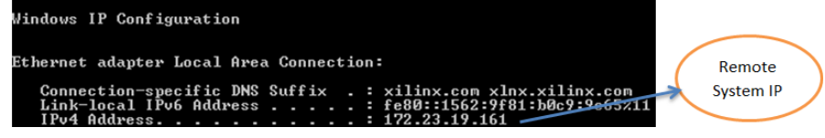
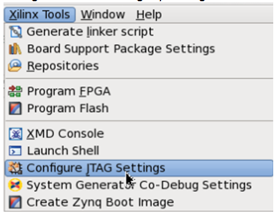
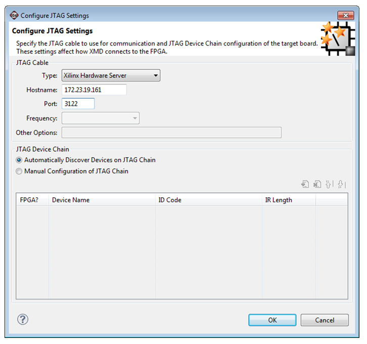
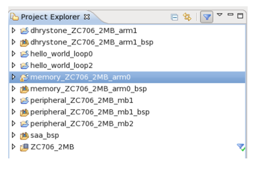
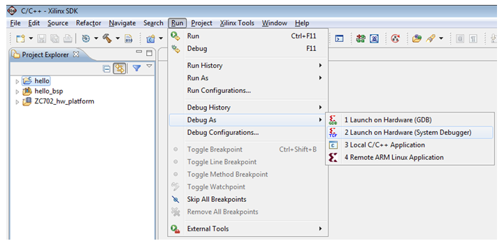
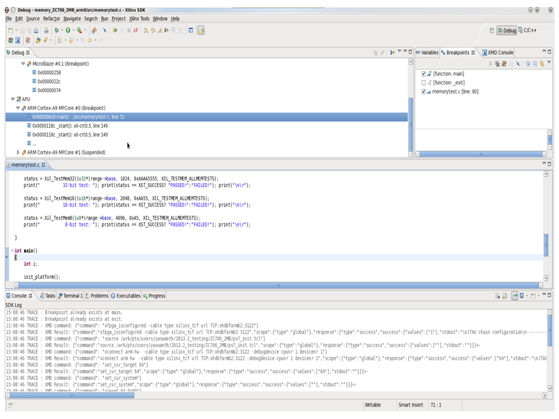

Remote Debug with System Debugger (TCF)
Setting Up the Remote System Environment
- Running hw_server with non-default port (for example: 3122) enables remote connections. Use the following command to launch hw_server on port 3122:
hw_server -s “TCP::3122;Name=Project hello_world Hardware Server”
- Make sure your board is correctly connected.
- In a
cmd window, check the IP Address:

Setting Up the Local System for Remote Debug
- Launch SDK.
- To configure the JTAG settings, click Xilinx Tools > Configure JTAG Settings.

- Set the JTAG cable type as Xilinx Hardware Server and provide Hostname and Port details..

- Select the application to debug remotely.

- Click Run > Debug As > Launch on Hardware (System Debugger).



SDK System Debugger (TCF)
Copyright 1995-2013 Xilinx, Inc. All rights reserved.